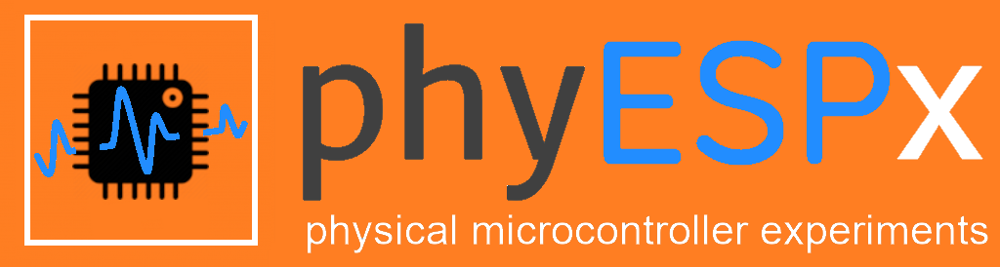

HC-SR04 Distance Sensor
Export data
Viewport: narrow
Viewport: 1 comumn
Viewport: 2 comumns
Viewport: 3 comumns
Bright mode
Font size
−
1
+
Simple
Processed
No error.
This feature will be available soon...